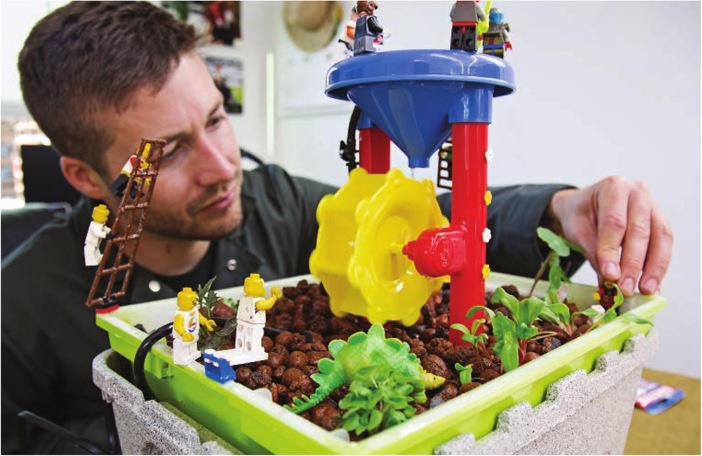

That said, there are some unique methods that hydroponic growers are using to manipulate their crop. Many commercial hydroponic tomato growers purposely stress their plants with high nutrient levels at key stages in their development to induce an increase in sugar content in the tomatoes. The growers can spike the nutrients to induce the sugar increase and then reduce the nutrients to a normal level to maintain healthy growth. For lettuce, the Oizumi Yasaikobo Co., Ltd., in Chichibu City, Japan, has developed a method for growing lowpotassium lettuce using hydroponic methods. The farm grows these specialty lettuces for customers suffering from kidney disease who are getting treated with dialysis and are restricted from consuming vegetables with a high potassium content. This effort to grow produce with a custom nutrient content is one of many similar projects being developed around the world as growers gain the ability to precisely control every aspect of a crop's growing environment. 1 1 Increased ability to direct crop growth for specific characteristics Not only can nutrient content be manipulated, but other characteristics, such as leaf size, leaf color, root size, and plant height, can also be manipulated when hydroponics is combined with indoor growing. Indoor gardeners can use various colors of light to induce specific characteristics. A popular practice is the use of blue light to grow more compact plants indoors to reduce the vertical space required for a crop. 12 Clean and low mess Soil gardening can be messy. This is not bad, but not always ideal. The most extreme example is the International Space Station. A floating cloud of soil would be a disaster around that sensitive equipment. For those of us not growing INTRODUCTION 11
